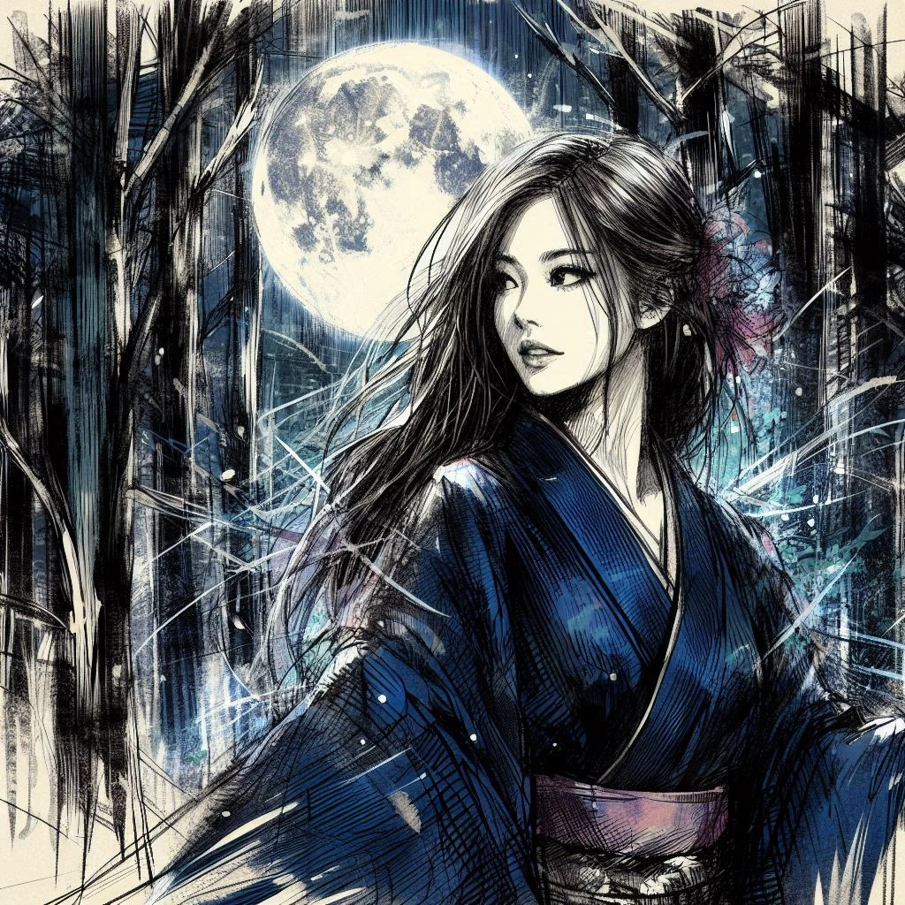

L'Enchanteresse aux Pièces de Ōgi
On raconte qu'au Japon, dans la région du Kansai, lorsque la pleine lune brille haut dans le ciel, une créature aux charmes ensorcelants fait son apparition, cherchant à attirer les passants égarés.

Belle et mystérieuse, Komayō séduit les infortunés avec son attrait irrésistible en leur suggérant de manière perfide une partie de ōgi, une variante du traditionnel jeu d'échecs japonais. Ceux qui acceptent son invitation se retrouvent emportés dans un labyrinthe insaisissable de manœuvres et de stratégies.
Toutefois, à mesure que le jeu progresse, une lassitude insidieuse s'empare des joueurs, brouillant leur jugement et infiltrant leurs os, les conduisant inévitablement vers un sommeil aussi profond qu'immuable.
C'est durant ce repos abyssal que Komayō dévoile sa véritable nature. Elle s'empare de leur énergie vitale, ne laissant derrière elle que l'écho vide de leur ancienne vigueur. Les âmes de ces victimes malheureuses se voient alors transformées en yūrei, et condamnées à une errance sans fin. Hantées par le souvenir envoûtant de Komayō et tourmentées par l'espoir vain de terminer leur partie de ōgi, elles errent éternellement, prisonnières d'une quête inachevée et d'un rêve déchu.